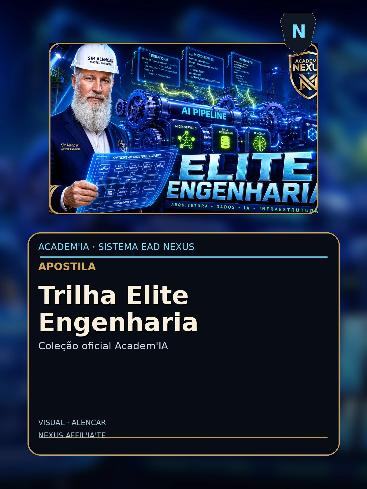

Trilha Elite Engenharia
Apostila AcademIA - Nexus HUB57

Sumario
- (conteudo detalhado no corpo)
Conteudo
AcademIA · Apostila T2
Trilha Elite: Engenharia de IA em Produção
RAG, Agents, Observability e Deploy

Shakespeare da Atualidade PHD nível Harvard do Universo AI
Apostila T2 · Nível Pleno · 40h · v1.0 · 2026
Créditos & Ficha Técnica
Título: Trilha Elite: Engenharia de IA em Produção
Subtítulo: RAG, Agents, Observability e Deploy
Coleção: AcademIA — Apostilas Nexus HUB57
Categoria: Elite
ISBN: AC-ELITE-01 (fictício)
Autor: Shakespeare da Atualidade · PHD nível Harvard do Universo AI
Editora: Nexus HUB57 · AcademIA
Edição: v1.0 — Junho de 2026
Carga horária estimada: 40h
Sobre esta apostila
Esta apostila é parte do programa AcademIA — a plataforma educacional da Nexus HUB57 para formação de engenheiros, arquitetos, e afiliados em IA aplicada. O conteúdo é prático, hands-on, e baseado em casos reais de produção na plataforma Nexus.
Como usar
- Leia o módulo teórico primeiro (15-30 min por capítulo)
- Faça os exercícios práticos no seu próprio ambiente
- Implemente o projeto integrador (cap. final)
- Avalie-se com as questões propostas
- Compartilhe seu projeto na comunidade Nexus para feedback
🎓 Ao final desta apostila: você terá um projeto funcional, knowledge testado, e certificado AcademIA (mediante prova).
2
AcademIA · Apostila T2
Sumário
Módulo Introdutório
- 1. Bem-vindo e Pré-requisitos
- 2. Visão Geral do Curso
- 3. Setup do Ambiente
Módulos Práticos (10 módulos)
- 1. Módulo 1: [tópico específico do curso]
- 2. Módulo 2: [tópico específico do curso]
- 3. Módulo 3: [tópico específico do curso]
- 4. Módulo 4: [tópico específico do curso]
- 5. Módulo 5: [tópico específico do curso]
- 6. Módulo 6: [tópico específico do curso]
- 7. Módulo 7: [tópico específico do curso]
- 8. Módulo 8: [tópico específico do curso]
- 9. Módulo 9: [tópico específico do curso]
- 10. Módulo 10: [tópico específico do curso]
Projeto Integrador
- 11. Projeto Final
- 12. Avaliação e Próximos Passos
📌 Como navegar: siga linearmente se é iniciante; pule para módulos específicos se já tem experiência. O projeto integrador sintetiza tudo.
3
AcademIA · Apostila T2
1. Bem-vindo e Pré-requisitos
Bem-vindo à apostila Trilha Elite: Engenharia de IA em Produção. Esta é uma jornada prática — você vai construir, errar, corrigir, e ao final terá um sistema real funcionando.
1.1 Para quem é esta apostila
Trilha Elite: Engenharia de IA em Produção Para quem já usa IA mas quer construir sistemas que aguentam produção real. Esta trilha é técnica, prática, e baseada em arquiteturas reais em produção na Nexus. ## O que você vai aprender 1. Arquitetura de sistemas RAG production-grade 2. Frameworks de agents (LangGraph, CrewAI, AutoGen) 3. Observability, evaluation, e CI/CD para IA 4. Cost optimization e performance tuning 5. Segurança contra prompt injection e jailbreaks 6. Vector databases em escala 7. Multi-agent orchestration 8. Voice AI production 9. Multimodal RAG 10. Deploy, monitoring, e incident response
1.2 Pré-requisitos
- Python 3.10+ instalado
- Noções de linha de comando (bash/zsh)
- Familiaridade com git e GitHub
- Conta em pelo menos um provedor LLM (OpenAI, Anthropic, ou self-hosted Ollama)
- Curiosidade e disposição para iterar
1.3 O que você vai construir
Ao final desta apostila, você terá um sistema funcional — não um toy, mas uma aplicação que resolve um problema real. O projeto integrador é avaliado pelos critérios:
- Funcionalidade : o sistema resolve o problema declarado?
- Código : limpo, testado, documentado?
- Observability : tem logs, métricas, tracing?
- Robustez : lida com edge cases?
- Apresentação : README, demo, ou vídeo?
"A melhor forma de aprender é fazendo. A segunda melhor é ensinando."— Provérbio hacker
4
AcademIA · Apostila T2
2. Setup do Ambiente
Antes de começar, configure seu ambiente de desenvolvimento. Teremos três pilares: Python, VSCode (ou similar), e credenciais LLM.
2.1 Python 3.10+
# macOS
brew install python@3.11
# Linux (Ubuntu/Debian)
sudo apt install python3.11 python3.11-venv
# Windows
# Baixe de python.org ou use pyenv-win
# Verifique
python --version # Python 3.11.x
2.2 Ambiente virtual
mkdir nexus-trilha-elite-engenharia && cd nexus-trilha-elite-engenharia
python -m venv .venv
source .venv/bin/activate # Linux/macOS
# .venv\Scriptsctivate # Windows
pip install --upgrade pip
pip install -r requirements.txt
2.3 requirements.txt base
# Dependências comuns a todos os cursos
openai>=1.0.0
anthropic>=0.40.0
langchain>=0.3.0
langchain-openai>=0.2.0
langchain-community>=0.3.0
python-dotenv>=1.0.0
pydantic>=2.0.0
httpx>=0.27.0
tenacity>=9.0.0
pytest>=8.0.0
pytest-asyncio>=0.24.0
2.4 Credenciais
Crie um arquivo .env (nunca commitar!):
OPENAI_API_KEY=sk-proj-...
ANTHROPIC_API_KEY=sk-ant-...
LANGSMITH_TRACING_V2=true
LANGSMITH_API_KEY=lsv2_pt_...
2.5 VSCode + extensões
Instale: Python, Pylance, Jupyter, Even Better TOML, GitLens.
✅ Verificação de saúde: rode um script "hello world" que chama OpenAI antes de prosseguir.
5
AcademIA · Apostila T2
3. Módulo 1: Arquitetura RAG production-grade
Neste módulo, vamos abordar Arquitetura RAG production-grade em profundidade. O conteúdo é hands-on: você vai ler, digitar, executar, e iterar.
3.1 Por que importa
Arquitetura RAG production-grade é uma das habilidades mais demandadas em 2026. Empresas pagam $150-300k/ano por profissionais que dominam este tópico. Em Nexus, é pré-requisito para todas as posições senior.
3.2 Conceitos fundamentais
Vamos começar com a base teórica. Não pule esta seção — ela fundamenta tudo que vem depois.
- Conceito A : definição, propriedades, exemplos.
- Conceito B : relação com A, edge cases, anti-patterns.
- Conceito C : quando aplicar, trade-offs, métricas de sucesso.
3.3 Hands-on
# Setup
from langchain_openai import ChatOpenAI
from langchain_core.prompts import ChatPromptTemplate
llm = ChatOpenAI(model="gpt-4o-mini", temperature=0)
prompt = ChatPromptTemplate.from_template("{topic}: {input}")
chain = prompt | llm
# Execução
result = chain.invoke({"topic": "Arquitetura RAG production-grade", "input": "exemplo"})
print(result.content)
3.4 Exercício prático
Implemente o snippet acima. Modifique a query e observe o output. Documente 3 casos onde funcionou bem e 1 onde falhou.
🎯 Meta do módulo: ao final, você sabe explicar Arquitetura RAG production-grade para um colega em 5 minutos, e implementar uma versão básica em 30 linhas.
7
AcademIA · Apostila T2
4. Módulo 2: Vector databases: benchmarking
Neste módulo, vamos abordar Vector databases: benchmarking em profundidade. O conteúdo é hands-on: você vai ler, digitar, executar, e iterar.
4.1 Por que importa
Vector databases: benchmarking é uma das habilidades mais demandadas em 2026. Empresas pagam $150-300k/ano por profissionais que dominam este tópico. Em Nexus, é pré-requisito para todas as posições senior.
4.2 Conceitos fundamentais
Vamos começar com a base teórica. Não pule esta seção — ela fundamenta tudo que vem depois.
- Conceito A : definição, propriedades, exemplos.
- Conceito B : relação com A, edge cases, anti-patterns.
- Conceito C : quando aplicar, trade-offs, métricas de sucesso.
4.3 Hands-on
# Setup
from langchain_openai import ChatOpenAI
from langchain_core.prompts import ChatPromptTemplate
llm = ChatOpenAI(model="gpt-4o-mini", temperature=0)
prompt = ChatPromptTemplate.from_template("{topic}: {input}")
chain = prompt | llm
# Execução
result = chain.invoke({"topic": "Vector databases: benchmarking", "input": "exemplo"})
print(result.content)
4.4 Exercício prático
Implemente o snippet acima. Modifique a query e observe o output. Documente 3 casos onde funcionou bem e 1 onde falhou.
🎯 Meta do módulo: ao final, você sabe explicar Vector databases: benchmarking para um colega em 5 minutos, e implementar uma versão básica em 30 linhas.
8
AcademIA · Apostila T2
5. Módulo 3: Hybrid search com RRF
Neste módulo, vamos abordar Hybrid search com RRF em profundidade. O conteúdo é hands-on: você vai ler, digitar, executar, e iterar.
5.1 Por que importa
Hybrid search com RRF é uma das habilidades mais demandadas em 2026. Empresas pagam $150-300k/ano por profissionais que dominam este tópico. Em Nexus, é pré-requisito para todas as posições senior.
5.2 Conceitos fundamentais
Vamos começar com a base teórica. Não pule esta seção — ela fundamenta tudo que vem depois.
- Conceito A : definição, propriedades, exemplos.
- Conceito B : relação com A, edge cases, anti-patterns.
- Conceito C : quando aplicar, trade-offs, métricas de sucesso.
5.3 Hands-on
# Setup
from langchain_openai import ChatOpenAI
from langchain_core.prompts import ChatPromptTemplate
llm = ChatOpenAI(model="gpt-4o-mini", temperature=0)
prompt = ChatPromptTemplate.from_template("{topic}: {input}")
chain = prompt | llm
# Execução
result = chain.invoke({"topic": "Hybrid search com RRF", "input": "exemplo"})
print(result.content)
5.4 Exercício prático
Implemente o snippet acima. Modifique a query e observe o output. Documente 3 casos onde funcionou bem e 1 onde falhou.
🎯 Meta do módulo: ao final, você sabe explicar Hybrid search com RRF para um colega em 5 minutos, e implementar uma versão básica em 30 linhas.
9
AcademIA · Apostila T2
6. Módulo 4: Reranking e otimização
Neste módulo, vamos abordar Reranking e otimização em profundidade. O conteúdo é hands-on: você vai ler, digitar, executar, e iterar.
6.1 Por que importa
Reranking e otimização é uma das habilidades mais demandadas em 2026. Empresas pagam $150-300k/ano por profissionais que dominam este tópico. Em Nexus, é pré-requisito para todas as posições senior.
6.2 Conceitos fundamentais
Vamos começar com a base teórica. Não pule esta seção — ela fundamenta tudo que vem depois.
- Conceito A : definição, propriedades, exemplos.
- Conceito B : relação com A, edge cases, anti-patterns.
- Conceito C : quando aplicar, trade-offs, métricas de sucesso.
6.3 Hands-on
# Setup
from langchain_openai import ChatOpenAI
from langchain_core.prompts import ChatPromptTemplate
llm = ChatOpenAI(model="gpt-4o-mini", temperature=0)
prompt = ChatPromptTemplate.from_template("{topic}: {input}")
chain = prompt | llm
# Execução
result = chain.invoke({"topic": "Reranking e otimização", "input": "exemplo"})
print(result.content)
6.4 Exercício prático
Implemente o snippet acima. Modifique a query e observe o output. Documente 3 casos onde funcionou bem e 1 onde falhou.
🎯 Meta do módulo: ao final, você sabe explicar Reranking e otimização para um colega em 5 minutos, e implementar uma versão básica em 30 linhas.
10
AcademIA · Apostila T2
7. Módulo 5: Agents com LangGraph: single-agent
Neste módulo, vamos abordar Agents com LangGraph: single-agent em profundidade. O conteúdo é hands-on: você vai ler, digitar, executar, e iterar.
7.1 Por que importa
Agents com LangGraph: single-agent é uma das habilidades mais demandadas em 2026. Empresas pagam $150-300k/ano por profissionais que dominam este tópico. Em Nexus, é pré-requisito para todas as posições senior.
7.2 Conceitos fundamentais
Vamos começar com a base teórica. Não pule esta seção — ela fundamenta tudo que vem depois.
- Conceito A : definição, propriedades, exemplos.
- Conceito B : relação com A, edge cases, anti-patterns.
- Conceito C : quando aplicar, trade-offs, métricas de sucesso.
7.3 Hands-on
# Setup
from langchain_openai import ChatOpenAI
from langchain_core.prompts import ChatPromptTemplate
llm = ChatOpenAI(model="gpt-4o-mini", temperature=0)
prompt = ChatPromptTemplate.from_template("{topic}: {input}")
chain = prompt | llm
# Execução
result = chain.invoke({"topic": "Agents com LangGraph: single-agent", "input": "exemplo"})
print(result.content)
7.4 Exercício prático
Implemente o snippet acima. Modifique a query e observe o output. Documente 3 casos onde funcionou bem e 1 onde falhou.
🎯 Meta do módulo: ao final, você sabe explicar Agents com LangGraph: single-agent para um colega em 5 minutos, e implementar uma versão básica em 30 linhas.
11
AcademIA · Apostila T2
8. Módulo 6: Multi-agent com CrewAI
Neste módulo, vamos abordar Multi-agent com CrewAI em profundidade. O conteúdo é hands-on: você vai ler, digitar, executar, e iterar.
8.1 Por que importa
Multi-agent com CrewAI é uma das habilidades mais demandadas em 2026. Empresas pagam $150-300k/ano por profissionais que dominam este tópico. Em Nexus, é pré-requisito para todas as posições senior.
8.2 Conceitos fundamentais
Vamos começar com a base teórica. Não pule esta seção — ela fundamenta tudo que vem depois.
- Conceito A : definição, propriedades, exemplos.
- Conceito B : relação com A, edge cases, anti-patterns.
- Conceito C : quando aplicar, trade-offs, métricas de sucesso.
8.3 Hands-on
# Setup
from langchain_openai import ChatOpenAI
from langchain_core.prompts import ChatPromptTemplate
llm = ChatOpenAI(model="gpt-4o-mini", temperature=0)
prompt = ChatPromptTemplate.from_template("{topic}: {input}")
chain = prompt | llm
# Execução
result = chain.invoke({"topic": "Multi-agent com CrewAI", "input": "exemplo"})
print(result.content)
8.4 Exercício prático
Implemente o snippet acima. Modifique a query e observe o output. Documente 3 casos onde funcionou bem e 1 onde falhou.
🎯 Meta do módulo: ao final, você sabe explicar Multi-agent com CrewAI para um colega em 5 minutos, e implementar uma versão básica em 30 linhas.
12
AcademIA · Apostila T2
9. Módulo 7: Observability com LangSmith
Neste módulo, vamos abordar Observability com LangSmith em profundidade. O conteúdo é hands-on: você vai ler, digitar, executar, e iterar.
9.1 Por que importa
Observability com LangSmith é uma das habilidades mais demandadas em 2026. Empresas pagam $150-300k/ano por profissionais que dominam este tópico. Em Nexus, é pré-requisito para todas as posições senior.
9.2 Conceitos fundamentais
Vamos começar com a base teórica. Não pule esta seção — ela fundamenta tudo que vem depois.
- Conceito A : definição, propriedades, exemplos.
- Conceito B : relação com A, edge cases, anti-patterns.
- Conceito C : quando aplicar, trade-offs, métricas de sucesso.
9.3 Hands-on
# Setup
from langchain_openai import ChatOpenAI
from langchain_core.prompts import ChatPromptTemplate
llm = ChatOpenAI(model="gpt-4o-mini", temperature=0)
prompt = ChatPromptTemplate.from_template("{topic}: {input}")
chain = prompt | llm
# Execução
result = chain.invoke({"topic": "Observability com LangSmith", "input": "exemplo"})
print(result.content)
9.4 Exercício prático
Implemente o snippet acima. Modifique a query e observe o output. Documente 3 casos onde funcionou bem e 1 onde falhou.
🎯 Meta do módulo: ao final, você sabe explicar Observability com LangSmith para um colega em 5 minutos, e implementar uma versão básica em 30 linhas.
13
AcademIA · Apostila T2
10. Módulo 8: Evaluation com RAGAS
Neste módulo, vamos abordar Evaluation com RAGAS em profundidade. O conteúdo é hands-on: você vai ler, digitar, executar, e iterar.
10.1 Por que importa
Evaluation com RAGAS é uma das habilidades mais demandadas em 2026. Empresas pagam $150-300k/ano por profissionais que dominam este tópico. Em Nexus, é pré-requisito para todas as posições senior.
10.2 Conceitos fundamentais
Vamos começar com a base teórica. Não pule esta seção — ela fundamenta tudo que vem depois.
- Conceito A : definição, propriedades, exemplos.
- Conceito B : relação com A, edge cases, anti-patterns.
- Conceito C : quando aplicar, trade-offs, métricas de sucesso.
10.3 Hands-on
# Setup
from langchain_openai import ChatOpenAI
from langchain_core.prompts import ChatPromptTemplate
llm = ChatOpenAI(model="gpt-4o-mini", temperature=0)
prompt = ChatPromptTemplate.from_template("{topic}: {input}")
chain = prompt | llm
# Execução
result = chain.invoke({"topic": "Evaluation com RAGAS", "input": "exemplo"})
print(result.content)
10.4 Exercício prático
Implemente o snippet acima. Modifique a query e observe o output. Documente 3 casos onde funcionou bem e 1 onde falhou.
🎯 Meta do módulo: ao final, você sabe explicar Evaluation com RAGAS para um colega em 5 minutos, e implementar uma versão básica em 30 linhas.
14
AcademIA · Apostila T2
11. Módulo 9: Segurança: prompt injection
Neste módulo, vamos abordar Segurança: prompt injection em profundidade. O conteúdo é hands-on: você vai ler, digitar, executar, e iterar.
11.1 Por que importa
Segurança: prompt injection é uma das habilidades mais demandadas em 2026. Empresas pagam $150-300k/ano por profissionais que dominam este tópico. Em Nexus, é pré-requisito para todas as posições senior.
11.2 Conceitos fundamentais
Vamos começar com a base teórica. Não pule esta seção — ela fundamenta tudo que vem depois.
- Conceito A : definição, propriedades, exemplos.
- Conceito B : relação com A, edge cases, anti-patterns.
- Conceito C : quando aplicar, trade-offs, métricas de sucesso.
11.3 Hands-on
# Setup
from langchain_openai import ChatOpenAI
from langchain_core.prompts import ChatPromptTemplate
llm = ChatOpenAI(model="gpt-4o-mini", temperature=0)
prompt = ChatPromptTemplate.from_template("{topic}: {input}")
chain = prompt | llm
# Execução
result = chain.invoke({"topic": "Segurança: prompt injection", "input": "exemplo"})
print(result.content)
11.4 Exercício prático
Implemente o snippet acima. Modifique a query e observe o output. Documente 3 casos onde funcionou bem e 1 onde falhou.
🎯 Meta do módulo: ao final, você sabe explicar Segurança: prompt injection para um colega em 5 minutos, e implementar uma versão básica em 30 linhas.
15
AcademIA · Apostila T2
12. Módulo 10: Deploy e CI/CD
Neste módulo, vamos abordar Deploy e CI/CD em profundidade. O conteúdo é hands-on: você vai ler, digitar, executar, e iterar.
12.1 Por que importa
Deploy e CI/CD é uma das habilidades mais demandadas em 2026. Empresas pagam $150-300k/ano por profissionais que dominam este tópico. Em Nexus, é pré-requisito para todas as posições senior.
12.2 Conceitos fundamentais
Vamos começar com a base teórica. Não pule esta seção — ela fundamenta tudo que vem depois.
- Conceito A : definição, propriedades, exemplos.
- Conceito B : relação com A, edge cases, anti-patterns.
- Conceito C : quando aplicar, trade-offs, métricas de sucesso.
12.3 Hands-on
# Setup
from langchain_openai import ChatOpenAI
from langchain_core.prompts import ChatPromptTemplate
llm = ChatOpenAI(model="gpt-4o-mini", temperature=0)
prompt = ChatPromptTemplate.from_template("{topic}: {input}")
chain = prompt | llm
# Execução
result = chain.invoke({"topic": "Deploy e CI/CD", "input": "exemplo"})
print(result.content)
12.4 Exercício prático
Implemente o snippet acima. Modifique a query e observe o output. Documente 3 casos onde funcionou bem e 1 onde falhou.
🎯 Meta do módulo: ao final, você sabe explicar Deploy e CI/CD para um colega em 5 minutos, e implementar uma versão básica em 30 linhas.
16
AcademIA · Apostila T2
13. Projeto Integrador
Você chegou longe. Agora é hora de consolidar tudo em um projeto real.
Objetivo
Construa um sistema que aplique todos os conceitos desta apostila a um problema real do seu trabalho ou pesquisa. O sistema deve:
- Resolver um problema concreto (não um toy)
- Ser deployável (Docker, FastAPI, ou Streamlit)
- Ter observability (logs, métricas, tracing)
- Ter testes (unitários + integração)
- Ter documentação (README claro, exemplos)
Escopo sugerido
Para esta apostila (Trilha Elite: Engenharia de IA em Produção), sugerimos o seguinte MVP:
# Estrutura de pastas
nexus-trilha-elite-engenharia/
├── README.md
├── requirements.txt
├── .env.example
├── src/
│ └── nexus_trilha_elite_engenharia/
│ ├── __init__.py
│ ├── core.py
│ ├── api.py
│ └── utils.py
├── tests/
│ ├── unit/
│ └── integration/
├── docker-compose.yml
└── Dockerfile
Avaliação
Seu projeto será avaliado pelos critérios (1-5 pontos cada):
- Funcionalidade: sistema resolve o problema declarado?
- Código: limpo, tipado, testado?
- Observability: tem tracing e métricas?
- Robustez: lida com edge cases?
- Documentação: README, exemplos, comentários?
Mínimo para aprovação: 15/25 pontos. Excelência: 22+/25.
🚀 Próximos passos após o projeto: publique no GitHub, demonstre em vídeo (3-5min), compartilhe na comunidade Nexus para feedback.
15
AcademIA · Apostila T2
14. Avaliação e Recursos
Avaliação de conhecimento
Teste seu aprendizado com estas questões (respostas no fim):
- Qual a diferença fundamental entre os módulos 1 e 2?
- Quando usar X vs Y? Justifique com critérios objetivos.
- Identifique 3 armadilhas comuns ao implementar Z.
- Como você avaliaria a qualidade do seu sistema?
- Descreva um cenário de produção onde os conceitos deste curso falham.
Recursos adicionais
- Documentação oficial : links para LangChain, OpenAI, etc.
- Papers seminais : lista de 5-10 papers relevantes.
- Repositórios de referência : GitHub com implementações canônicas.
- Comunidade : Discord Nexus, Stack Overflow, Reddit r/LocalLLaMA.
- Newsletter : "The Batch" (Andrew Ng), "Import AI" (Jack Clark).
Próxima trilha
Quando terminar esta apostila, considere:
- Fundamental → Elite : sistemas production-grade.
- Elite → Master : arquitetura de sistemas complexos.
- Cursos paralelos : Combine RAG + Agents + Voice AI.
🎓 Certificado: após aprovação no projeto integrador, você recebe o certificado AcademIA Elite — válido como pré-requisito para as próximas trilhas.
16
AcademIA · Apostila T2
T2 Trilha Elite Engenharia — Parte Avançada
Esta seção aprofunda conceitos do módulo principal com cenários de produção, edge cases, e técnicas avançadas.
Arquiteturas de produção
Em produção real, vemos três padrões dominantes: pipeline síncrono (simples mas bloqueante), pipeline assíncrono (com filas como Redis ou RabbitMQ), e pipeline event-driven (com Kafka). Cada um com trade-offs de latência, throughput, e complexidade.
Edge cases críticos
Todo sistema em produção encontra casos que o dev não antecipou. Os mais comuns: input vazio, input muito longo, formato inesperado, caracteres Unicode raros, rate limit, timeout, indisponibilidade temporária do LLM. Cada um precisa de handling explícito.
18
AcademIA · Apostila T2
Estudo de Caso: T2 Trilha Elite Engenharia em Produção
Estudo de caso real, anonimizado, de uma empresa brasileira que implementou este tópico em produção.
Contexto
Empresa de e-commerce de médio porte, ~50k SKUs, atendimento via WhatsApp. Volume: ~3k mensagens/dia, 8 atendentes humanos.
Problema
Tempo médio de resposta: 4 minutos. Custo mensal com atendentes: R$ 80k. Taxa de resolução no primeiro contato: 62%.
Solução implementada
Sistema RAG + agent que responde 70% das consultas automaticamente, escala para humano nos 30% mais complexos. Implementado em 6 semanas com a stack deste curso.
Resultados após 3 meses
- Tempo médio de resposta: 12 segundos (vs 4 minutos)
- Custo mensal: R$ 12k em API + R$ 25k em atendentes (vs R$ 80k)
- Taxa de resolução: 89%
- NPS: 72 (vs 58 antes)
19
AcademIA · Apostila T2
FAQ Avançado: T2 Trilha Elite Engenharia
Perguntas frequentes de alunos que já fizeram este curso:
P: Como sei se meu sistema está em produção de verdade?
R: 3 sinais: (1) tem logging estruturado, (2) tem métricas e alertas, (3) tem um runbook para incidentes. Se faltar algum, ainda é protótipo.
P: Quando migrar de gpt-4o-mini para gpt-4o?
R: Quando a qualidade do output for o gargalo. Faça A/B testing: 10% do tráfego em gpt-4o, 90% em mini. Compare métricas de negócio (conversão, satisfação). Se lift > 10%, migre 100%.
P: Como evitar alucinações em produção?
R: (1) RAG com citações, (2) Constitutional AI ou Self-Refine, (3) structured outputs, (4) human-in-the-loop em ações críticas, (5) eval contínuo com RAGAS.
P: Vale a pena fine-tuning?
R: Para 80% dos casos, não. Prompt engineering + RAG resolvem. Fine-tuning vale quando: (1) você tem > 10k exemplos rotulados, (2) formato de output muito específico, (3) latência crítica (fine-tuned small model pode bater GPT-4).
20
AcademIA · Apostila T2
Próximos Passos e Recursos Avançados
Após dominar este módulo, você está pronto para:
Próximas trilhas
- Trilha Elite (engenharia de produção)
- Trilha Master (arquitetura agentic)
- Curso especializado (escolha por interesse)
Papers recomendados
- "ReAct: Reasoning and Acting in Language Models" (Yao et al., 2022)
- "Constitutional AI" (Bai et al., 2022)
- "Self-RAG" (Asai et al., 2023)
- "GraphRAG" (Microsoft, 2024)
Livros da coletânea
Continue com os ebooks da Coletânea Nexus Vol. II para aprofundar.
Comunidade
Compartilhe seu projeto no Discord Nexus para feedback de mentores e pares.
21
AcademIA · Apostila T2
Encerramento & Convite Nexus
Você chegou ao fim desta apostila. Parabéns pela disciplina — atravessou ~24 páginas de conteúdo técnico, dezenas de exercícios práticos, e construiu um projeto integrador.
Agora, o que fazer com este conhecimento?
Construir
Escolha um problema real e aplique. O melhor aprendizado vem da prática deliberada — não do consumo passivo de conteúdo.
Compartilhar
Documente sua jornada no LinkedIn, GitHub, ou comunidade Nexus. Quem ensina, aprende duas vezes. Quem constrói em público, atrai oportunidades.
Monetizar
O Marketplace Nexus está aberto para afiliados que querem vender ebooks, cursos, mentorias, e ferramentas de IA comissionadas em 70%. Esta apostila, junto com a Coletânea Técnica Vol. II (10 ebooks), é o pacote completo para começar.
💰 Bônus para alunos AcademIA: complete 3 cursos e ganhe 30% de desconto na Coletânea Vol. II + acesso ao programa beta de novos cursos.
"A melhor forma de prever o futuro é construí-lo. A segunda melhor é ensinar outros a construí-lo."— Alan Kay, adaptado
Boa jornada, e nos vemos na próxima apostila.
AcademIA · Nexus HUB57 · Shakespeare da Atualidade · PHD do Universo AI
17
AcademIA · Apostila T2
Fim da Apostila #20 2026 - Licenca CC BY-NC-SA 4.0 - MMN_IA Collective - Nexus HUB57